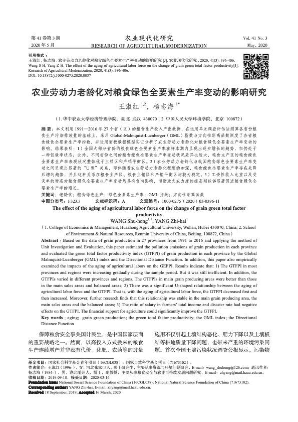

Home Page
About Me
Welcome to my page!
I am Shuhong Wang, a Ph.D. candidate supervised by Prof. Wanyang Hu in the Department of Public and International Affairs at City University of Hong Kong. My research focuses on the social determinants of health (well-being and aging), aging and social policy, migration, and urban and regional development. If you have any questions to discuss or are interested in collaboration, please feel free to contact me.
As I near the completion of my Ph.D., I am actively exploring professional opportunities in the job market.
Publication List
More Information at
Google Scholar

Environment, Development and Sustainability
2021

农业现代化研究
2020
Conference Presentations
Environment, Development and Sustainability
2021
Teaching Assistant
|
Source code credited to Prof. Xiaowei Zhou |